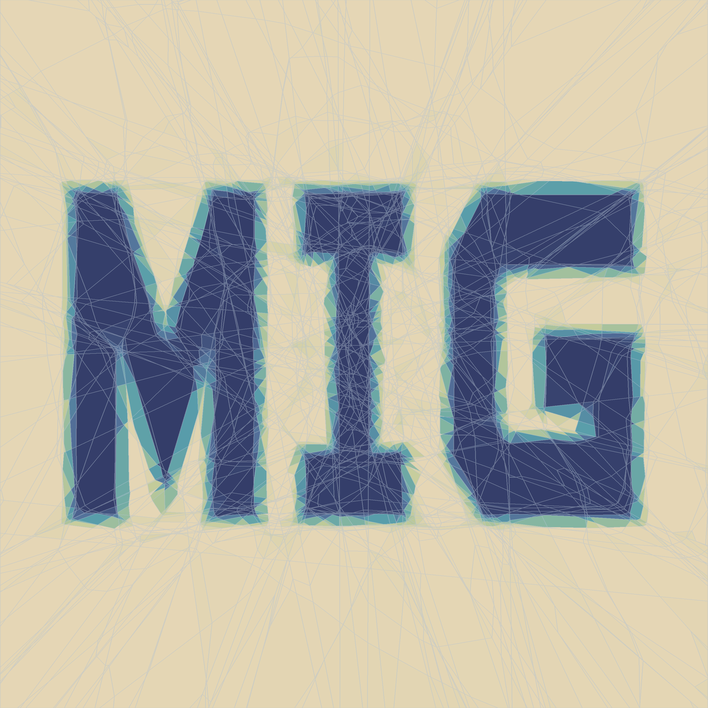

Original width
2 → 48 → 48 → 32 → 1

- Parameters
- 4,097
- Training steps
- 100,000
- Regions
- 13,510
- Training RMSE
- 0.03043
- Held-out RMSE
- 0.03279
The same three hidden layers, with each layer reduced to 75% of its original width. Final trained weights, viewed from above.
2 → 48 → 48 → 32 → 1

2 → 36 → 36 → 24 → 1
Each image shows exact ReLU regions over x, y ∈ [−3, 3]. Lines follow polygon boundaries; fills use each region’s average elevation. Both frames share the same light-to-dark height scale (0.0–1.2).
The original uses its saved 100,000-step weights; the new ¾-width model uses 25,000 steps. Both use the same 40,000 training samples. This is a static reference, not an equal-budget capacity comparison. Held-out RMSE uses the same 20,000 independent samples (seed 7). Click a frame to open it at full resolution.
The same ¾-width model at nearby saved training checkpoints. Requested offsets are relative to step 25,000; images use the nearest real saved checkpoint, without weight interpolation or additional training. Each card lists its actual step and requested target. The color scale and exact polygon rendering match the comparison above.
Actual checkpoint: 25,000
Actual checkpoint: 24,496 · target: 24,500
Actual checkpoint: 23,992 · target: 24,000
Actual checkpoint: 22,986 · target: 23,000